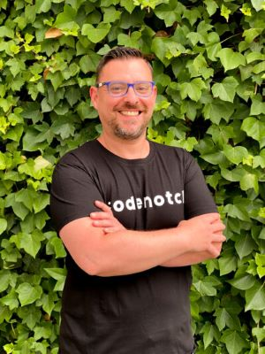
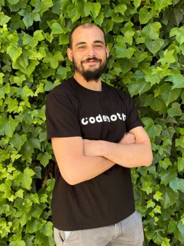

José Herrera |
Carmen Martín |
Daniel Vera |
|---|---|---|
|  |  |
 |
José es Ingeniero Superior en Informática por la Universidad
Politécnica de Madrid y Doctor por la Universidad Complutense
de Madrid. |
Menchu se graduó en bellas artes, pero decidió redirigir su
carrera profesional hacia el mundo del diseño web, combinando
sus dos pasiones: el arte y la tecnología. |
Daniel decidió dar un cambio radical a su vida profesional.
Dejó su trabajo en el mundo de la hostelería y apostó por
formarse como desarrollador Full Stack, cambiando así su vida
por completo. |